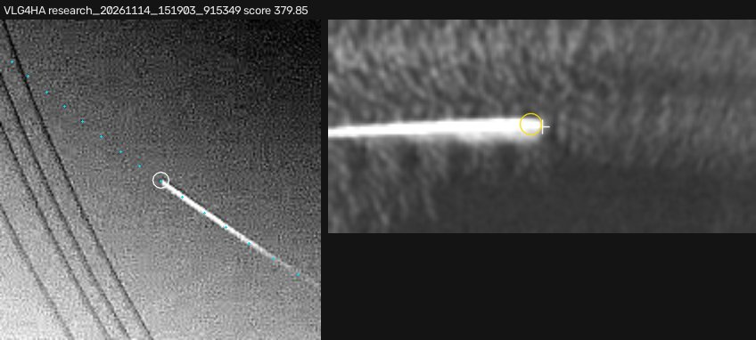
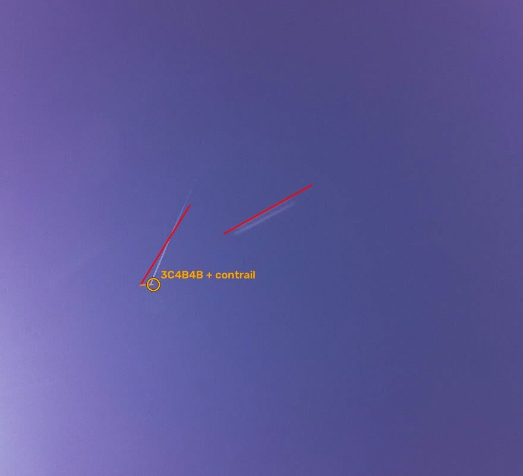
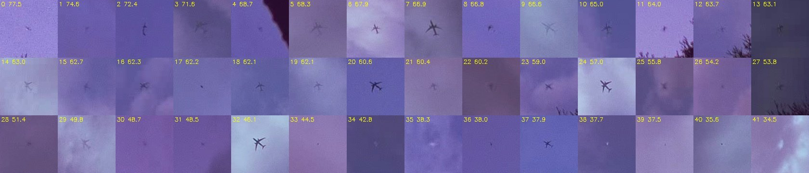
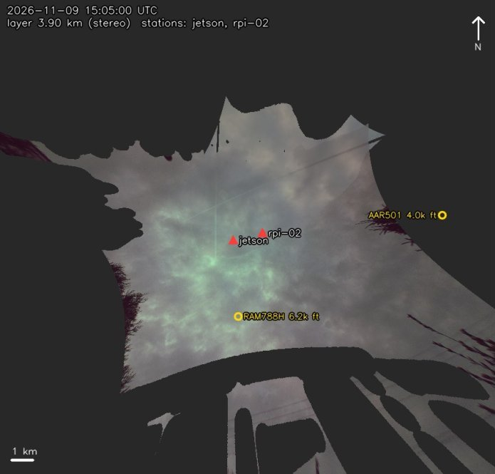
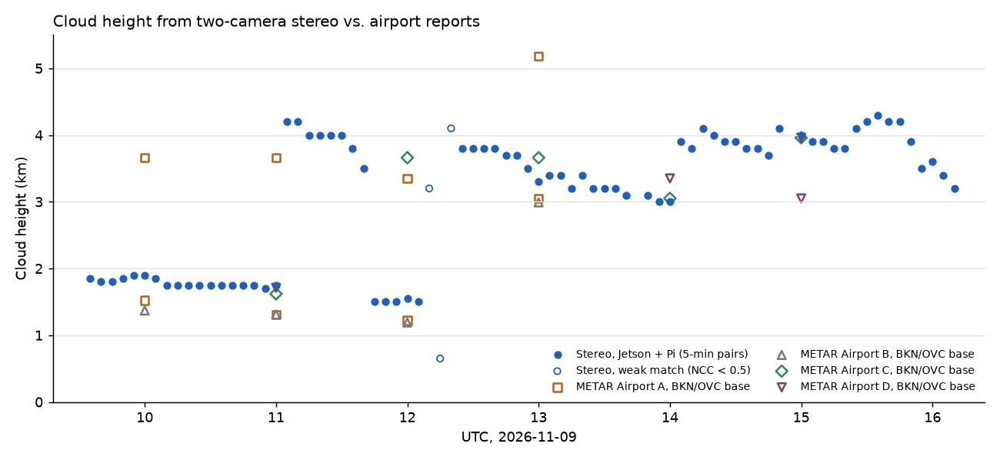

Two low-cost fisheye cameras that spot airliners overhead, from 4,000 to 39,000 ft, name them, follow their contrails and map the clouds in 3D.
A Jetson Orin Nano and a Raspberry Pi watch the whole sky. Their images are fused with aircraft transponder signals, airport weather reports and satellite cloud data. Everything on this page is real data from the two stations.
14 Nov 2026, 08:25–16:45 UTC · one frame every 5 min (a few missing around midday) · ground masked out
Counts: 14 Nov 2026. Calibration error: Jetson station, 23–24 Nov 2026.
An edge–cloud design. At the edge, each station runs its own camera and detector on the device and streams only what matters. On the cloud side, the heavy work runs on the archive: deciding which bright dot or white streak is which aircraft, checking the calibration against the sun, and combining the two stations into three dimensions.
Airliners at cruise altitude are often only one or two pixels wide. The camera tracks each moving dot and compares its path with where the aircraft's own ADS-B broadcast says it is. A name is given only when one aircraft clearly fits better than any other.
3× zoom that follows the aircraft. The circle is where ADS-B puts it; the amber dots are its predicted path. Played about 4× faster than real time. All five flights: 14 Nov 2026.
Closer to the ground the aircraft has a shape. A YOLO detector finds it and a tracker follows it across the frame. On 14 Nov, 49 flights below 25,000 ft were tracked and named this way.
Crop that follows the tracker, enlarged about 2×. The amber box is the detector's output in each frame.
Moving dots and short bright streaks are followed from frame to frame, with real per-frame timestamps.
Each track is compared with every aircraft in the air. A match needs to sit within 3° and clearly beat the runner-up. Otherwise it stays unnamed.
The confident matches, together with the sun, refine the camera's orientation every day (see below).
Knowing where the aircraft is, the system searches for a fresh trail starting right behind it. A trail only counts if the same patch of sky was empty just before the aircraft passed. No modelled trails are drawn: only what the camera saw.


An outdoor camera shifts a little each time it is touched or remounted. Instead of a manual survey, every evening the system matches the day's aircraft tracks and the sun's position to where they must be, and solves for the camera's exact tilt and heading.

The second station sees the same clouds from a slightly different place. Matching the two views gives the cloud height by triangulation, and the two images merge into one map of the sky at that height.


Two low-cost cameras, the aircraft's own transponder broadcasts and an open satellite feed, fused into a 3D model of the sky you can fly through. First, the raw fisheye video. Then the same five minutes rebuilt in 3D: cloud base measured by stereo, cloud top from the satellite, every aircraft at its true altitude. Two very different skies, one pipeline.
Every number below is checked against something the cameras did not produce: the aircraft's own transponder broadcasts, empty "control" paths where no aircraft flew, and an independent radar/lidar station. Each extra data source is what turns a weak signal into a reliable one.
One full day (14 Nov 2026). Every aircraft that passed at least 15° above the horizon, checked against every detector.
A pass "found" means the aircraft or its fresh contrail was seen; not every airliner leaves a contrail, so 73% is a lower bound on what the search catches. On cloudy hours, moving cloud edges raise the false-alarm rate (up to ~5% of control paths), which is why every detection must also start at a known aircraft.
5% → 73%
of high-altitude passes found. Image-only segmentation misses thin young contrails; knowing where to look finds them, and the control paths keep it honest.
6.8° → 1.0°
median miss for low aircraft, after the broadcasts revealed a hidden 2 s camera delay. Named low flights on 14 Nov went from 0 to 49.
2.2° → 0.21°
pointing error of the second station: its orientation from cloud matching alone, then refined with aircraft sightings. The first station reaches 0.46° from 984 aircraft and sun observations.
71 / 75
cloud heights within 0.3 km of an independent radar/lidar station; all 75 within 0.5 km (9 Nov). One camera alone cannot measure height at all.
base + top
stereo sees the cloud base, the satellite the cloud top: together they give the layer's thickness, e.g. a 7–8 km cirrus base under a 9.7–10.2 km top.
4.3% → 1.4%
false hits on empty paths on a clear day after masking the sun and the image rim, for a 10% loss of real passes.
The same aircraft seen at the same instant by both stations, 1.4 km apart, triangulated and compared with the altitude it broadcasts. To keep the test fair, the second station's orientation is refitted without the aircraft being measured.
| Flight | Seen as | ADS-B | Stereo | Error | Clouds-only orientation |
|---|---|---|---|---|---|
| AFR410 | aircraft | 1,189 m | 1,167 m | −23 m (−1.9%) | −48 m |
| EIN52V | aircraft | 1,346 m | 1,334 m | −12 m (−0.9%) | −36 m |
| HOP88RA | aircraft | 1,624 m | 1,596 m | −29 m (−1.8%) | −71 m |
| BAW139 | contrail tip | 9,952 m | 9,164 m | −789 m (−7.9%) | −2,264 m |
| SWR8AV | contrail tip | 10,562 m | 9,969 m | −593 m (−5.6%) | −1,907 m |
| EJU54BL | contrail tip | 11,767 m | 11,953 m | +185 m (+1.6%) | −2,430 m |
Heights above sea level. ADS-B pressure altitude is converted to geometric height with the GNSS–pressure difference each aircraft broadcasts. First station's orientation: fitted on an earlier day. Small sample (6 aircraft, one day); more simultaneous sightings are being collected.
Hardware, embedded software, models, data pipeline and analysis were all designed and built for this project.
Yiru Zhang · Permanent teacher-researcher, ESILV